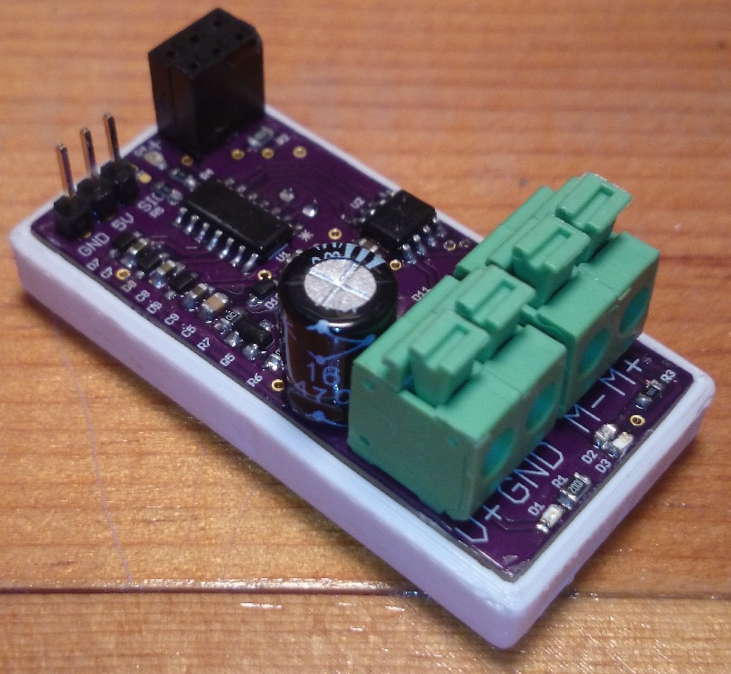

Water Sampler Catameran

Project Overview
The need for this ROV (Remotely Operated Vehicle) water sampler was thought up by my mother, to aid in completing some of her field work. The initial, and continuing, use for the sampler is for measuring the settleable solids and other qualities of river water. To execute environmental regulation, state law requires this measurement when there is construction on waterways in California. The measurement is specified for the middle of the river, at mid-depth. Taking water samples from the middle of the river without automation was a hassle, but with this ROV samples could be taken much more easily. Design constraints included the ability to self-propel to the middle of a river, perhaps 100 feet out; gather water from as much as 20 feet depth; and return with a sample of at least one liter.
Design
The catamaran structure is constructed of aluminum extruded angle. All mechanisms and components are mounted between two raised rails about 6 inches above the water and two pool noodles are secured to the base of the catamaran for floatation.
Propulsion
The sampler uses a standard 18 pound fishing trolling motor for thrust, which is vectored using a high-torque standard servo motor. The trolling motor is held by a quick-release shaft collar that allows the trolling motor to be held at different heights, down for use and up so the sampler can be laid flat on the ground when not in use.
Spool and Pump
The heart of the sampler is a spooled length of Tygon tubing. The spool is turned to lower the length of Tygon tubing to the sample depth, and to bring the tube up again when it is time to return to the shore of the river. A dry-priming pump pulls water through the deployed tube, through a rotary joint and pushes it into a two-liter bottle that can be retrieved when the sampler returns to shore.
Electronics
Power is provided by one 5AH, 12V sealed lead-acid battery that easily gives hour long runtimes at full throttle. Remote control is achieved through a standard hobby aircraft controller that includes a controller and a demodulating receiver. The receiver has six servo PWM signal outputs, four of which are used on the sampler. Three of the outputs send signal to electronic speed controllers I designed and built myself. First revision speed controllers worked, but proved to be too sensitive to shorting and failure. However, a better designed and protected fourth revision speed controller now reliably controls the sampler’s motors. One controller is even programmed to handle the feedback for Tygon tubing deployment, so there is no need for any central processing.

Use
The sampler was first successfully used in fall of 2015, and again this summer 2016. The sampler is light weight and has a hand grip, so it may be carried down a slope to a river by a single person without much extra difficulty. The sampler’s single-person usability is key, because it allows sampling to be safely performed by one person (so an individual need not venture out onto the water alone). While not constructed for use with a tether, all uses on rivers so far have used a tether in case of failure. Fortunately, the tether has yet to come into necessary play.